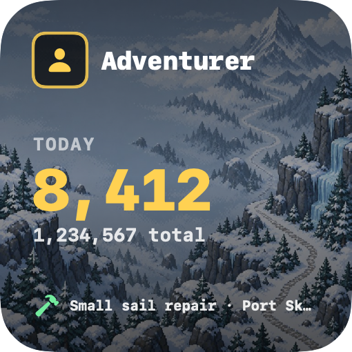
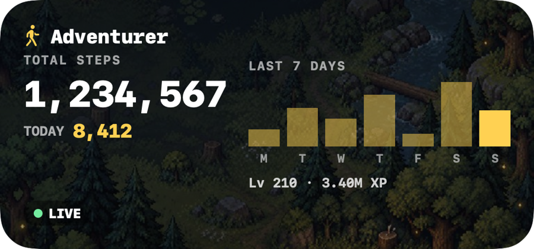
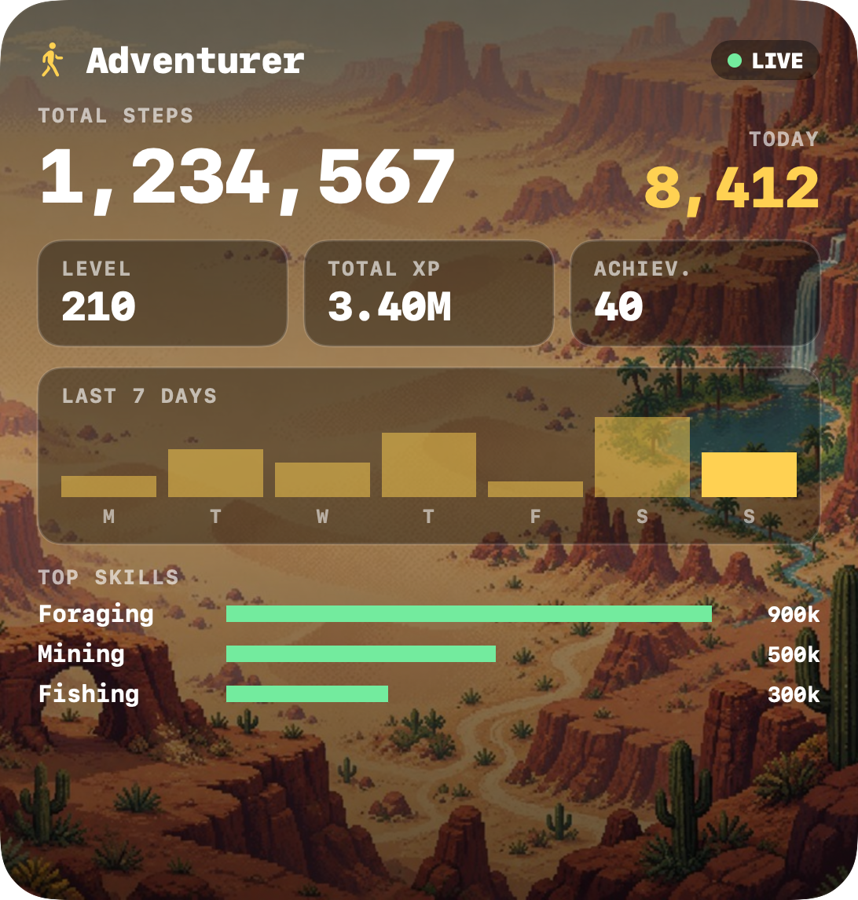

Install in a minute
No coding and no developer tools. You need a Mac running macOS 14 (Sonoma) or newer. Nothing asks for your WalkScape password. Pick whichever way you like better.
Option A · Download (no Terminal)
Download and open it
⬇ Download for Mac
Open the downloaded zip (double-click) and then double-click WalkScape Widget.
Approve it once
macOS will say it can't verify the app, because this free fan project isn't signed with a paid Apple developer account. Click Done, open System Settings → Privacy & Security, scroll down and click Open Anyway, then enter your Mac password. You only do this once.
Choose your character
The app moves itself into place and opens. Type your character name and click it, or paste your walkstats.app link.
Put it on your desktop
Right-click an empty spot on the desktop → Edit Widgets → search WalkScape → drag a size onto the desktop → Done.
Option B · One line in Terminal (skips the approval step)
Open Terminal
Press ⌘ + Space, type Terminal, press Return. It is a built-in Mac app, nothing to download.
Paste this line and press Return
It downloads the widget from this project's GitHub page and installs it.
curl -fsSL https://raw.githubusercontent.com/jaydenbarnescs-tech/walkscape-desktop-widget/main/get.sh | bash
Choose your character
A small window opens. Type your character name and click it. If your name does not show up, paste your walkstats.app profile link instead.
Put it on your desktop
Right-click an empty spot on the desktop → Edit Widgets → search WalkScape → drag a size onto the desktop → Done.
Three sizes, five landscapes
The background follows your character: harbours get the coast, snowy places get mountains, and so on. You can also pick one yourself in the setup app.



Good to know
Small, free and private by design.
WalkScape character stats are public. "Signing in" just means choosing your character.
No tracking, no ads. The widget only talks to WalkScape's servers, and your choice is saved on your Mac.
MIT licensed. Read every line on GitHub.
macOS refreshes widgets about every 5 minutes, so it is close to live, not instant.
Questions
My steps are not updating. Why?
The widget shows what WalkScape's servers know, and the game only uploads your progress while the WalkScape app is open on your phone (about once a minute). Open the game and the badge turns green and says LIVE within a minute or two. If the badge shows a time like "7 min", that is how long ago the game last synced.
Why does "Today" start at zero?
WalkScape only reports lifetime steps. The widget keeps its own small daily log, so today's count and the 7-day chart start when you install and fill in as you walk.
Is it safe? Does it need my password?
It never asks for a password or token. It reads the same public character data that sites like WalkStats show. It is sandboxed by macOS and can only reach the internet and read its own settings folder. The installer is a short script you can read before running it.
The widget does not show up in Edit Widgets.
Open the "WalkScape Widget" app in your Applications folder (inside your user folder, "Applications") once, then try again. If it still is not listed, run the install line again and log out and back in.
How do I remove it?
Right-click the widget → Remove Widget, then drag "WalkScape Widget" from your user folder's Applications folder to the Trash. For a full clean-up, also delete the hidden folder ~/.config/walkscape-widget.
Is this official?
No. It is an unofficial fan project made out of love for the game. See the credits below.